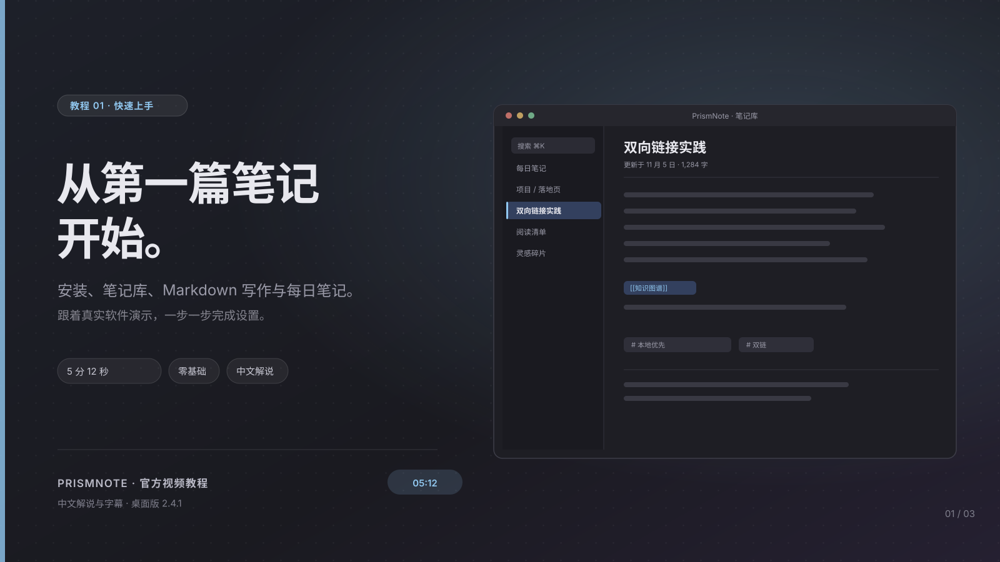
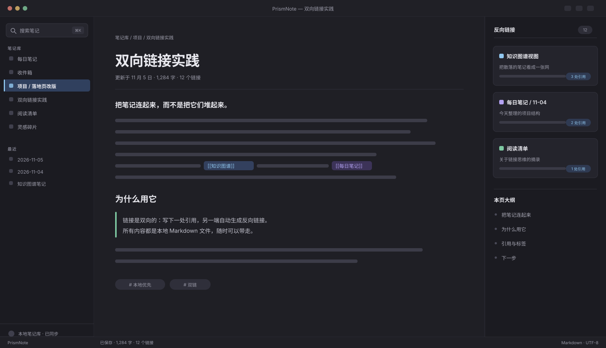
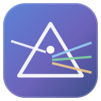

本地优先 · 离线可用 · v2.4.1
把想法，连成一张网。
跟着真实软件演示，完成双向链接、知识图谱与每日笔记。

写作、连接、回看，都在一个窗口。
左边是笔记树，中间是编辑器，右边是关系图谱与反向链接。


XINMX自留地本地优先的 Markdown 双链笔记 · 把想法连成一张网 了解特性 ↗
本地优先 · 离线可用 · v2.4.1
跟着真实软件演示，完成双向链接、知识图谱与每日笔记。

左边是笔记树，中间是编辑器，右边是关系图谱与反向链接。
